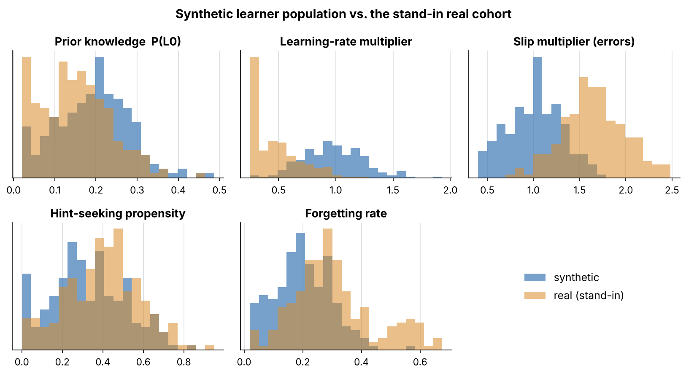
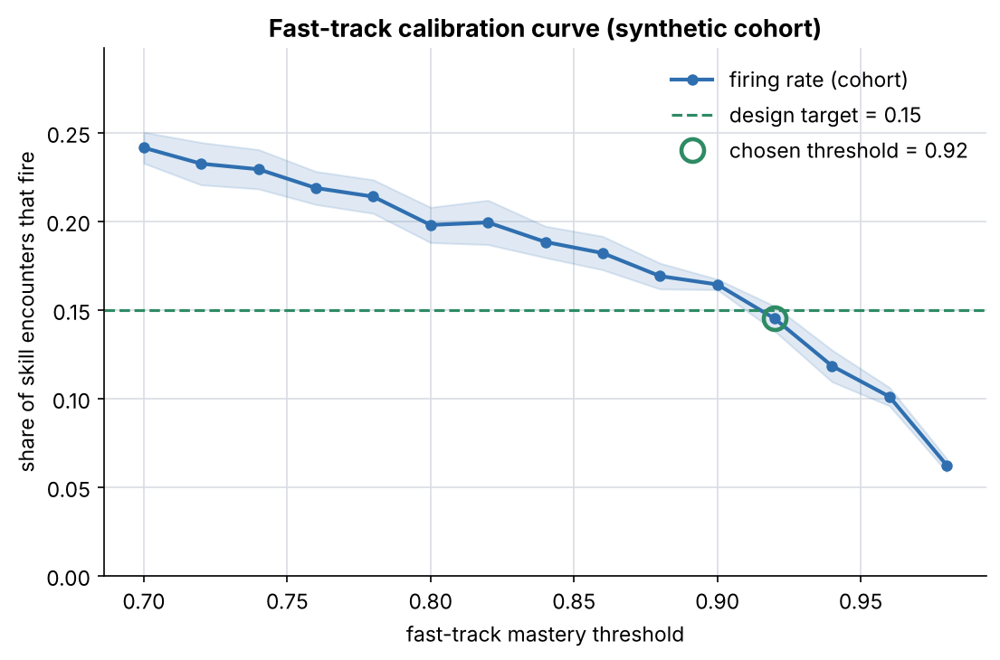
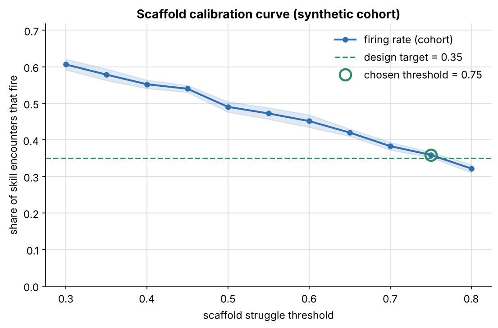
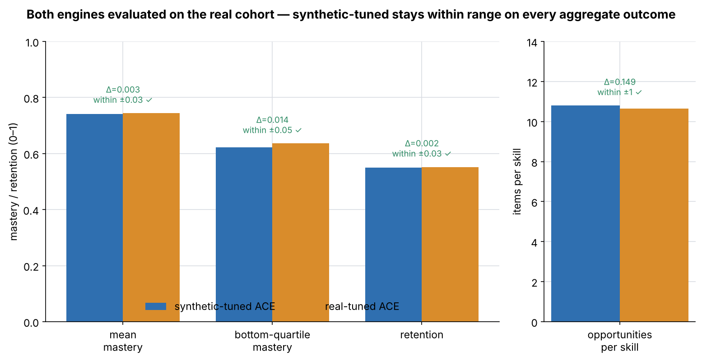
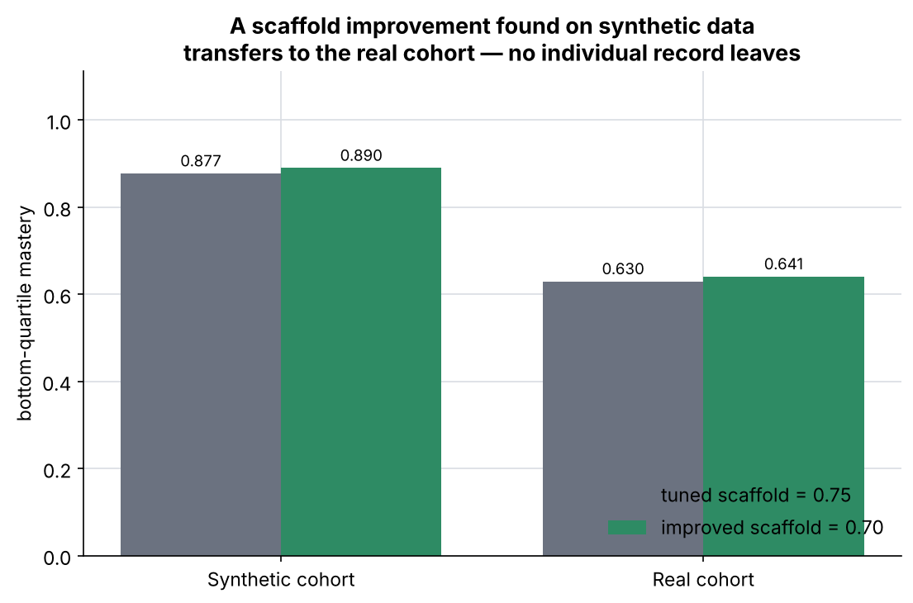
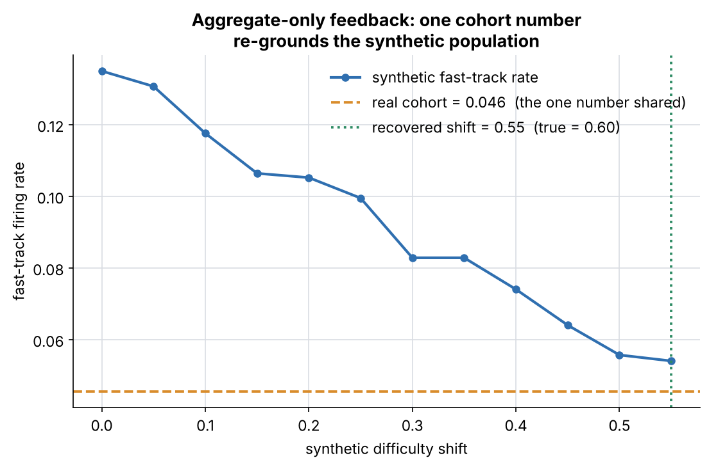
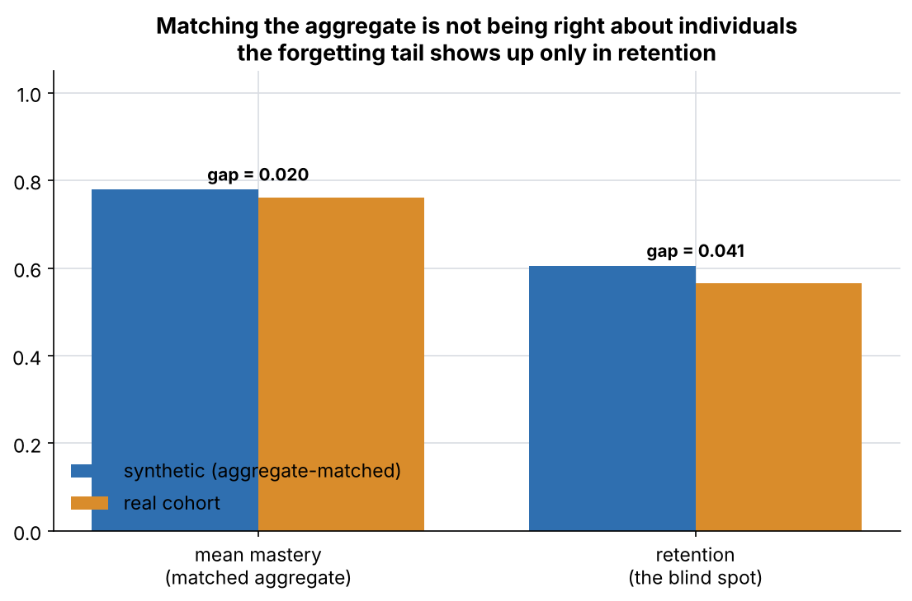

ACE is developed and calibrated on simulated middle schoolers. Real student data is needed only for low-volume aggregate validation — never for model development. Generated 2026-11-11; no real student data used.
Both engines tuned to the same design-intent firing rates, then both evaluated
on the real cohort. Synthetic-tuned thresholds: fast-track
0.92, scaffold 0.75.
Real-tuned: fast-track 0.70, scaffold
0.80.
| aggregate outcome | synthetic-tuned | real-tuned | Δ | tolerance | verdict |
|---|---|---|---|---|---|
| mean_mastery | 0.741 | 0.744 | 0.003 | ±0.03 | within range |
| bottom_quartile_mastery | 0.622 | 0.636 | 0.014 | ±0.05 | within range |
| retention | 0.550 | 0.552 | 0.002 | ±0.03 | within range |
| opportunities_per_skill | 10.801 | 10.652 | 0.149 | ±1 | within range |




A scaffold improvement found purely on synthetic data
(0.75 → 0.70, chosen to lift
strugglers within a 40% intervention budget) also lifts the real cohort's
bottom-quartile mastery — no individual record left the district. Transfers:
True.

The only real-world input was one number: the real cohort's fast-track rate
= 0.046. Feeding it back recovered a difficulty shift of
0.55 (true 0.60).

A synthetic population tuned to match real aggregates can still be wrong about individuals in ways that only show up in real classrooms. The stand-in real cohort's high-forgetting tail is invisible to the matched aggregate — the retention gap (0.041) is larger than the mastery gap (0.020). That is why the two streams validate each other rather than one replacing the other.

Parameters grounded in Corbett & Anderson (1995, BKT), Newell & Rosenbloom (1981, power law of practice), Aleven et al. (2006, help-seeking), and Ebbinghaus / Pavlik & Anderson (2005, memory decay).